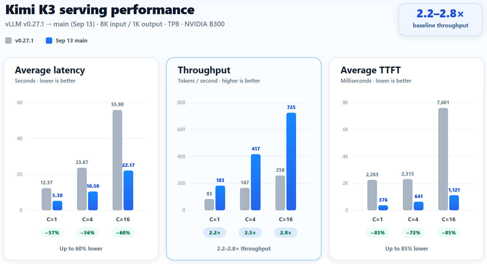
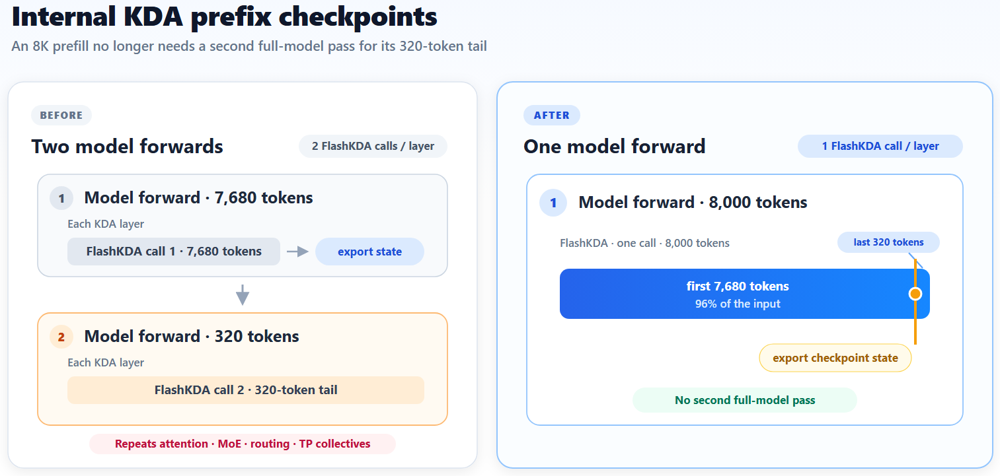
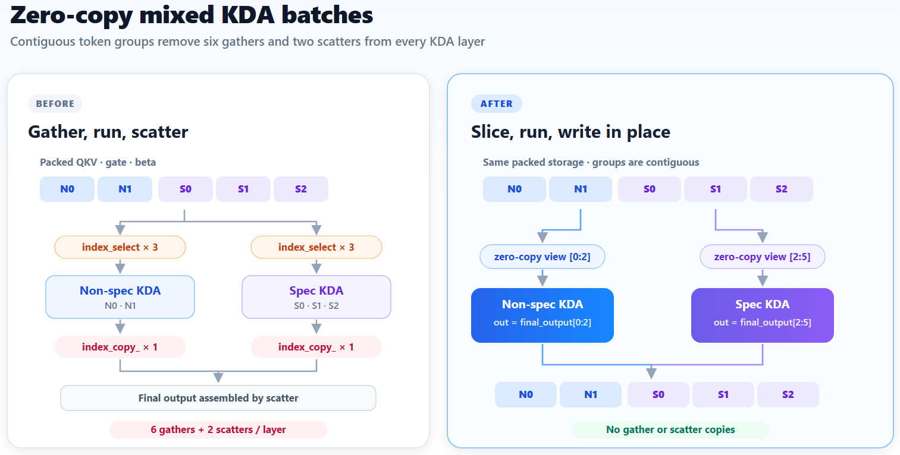
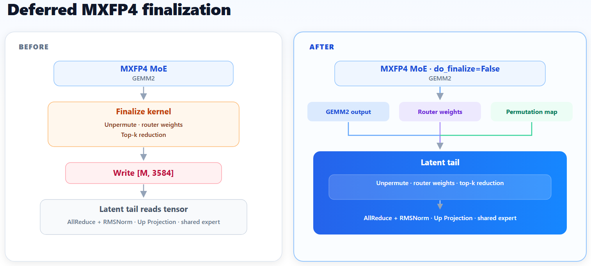
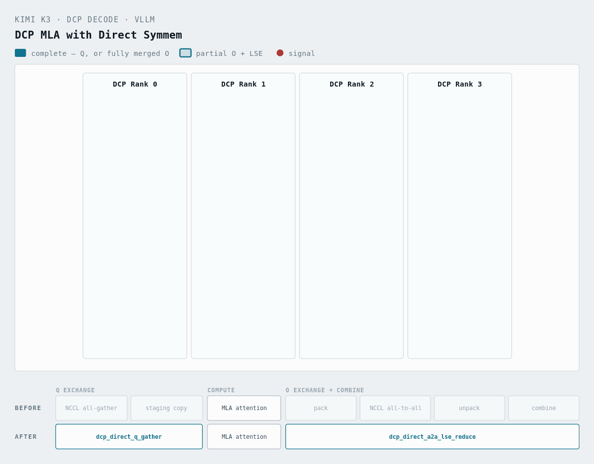

Kimi K3在Day-0就于vLLM跑通了，但要把它高效地服务起来，还得再走一遍整个栈。KDA循环状态、LatentMoE、MXFP4专家kernel、投机解码以及TP/PP各自暴露出不同的瓶颈，调度器的上限和小张量拷贝有时和大GEMM一样要紧。
文章先给端到端结果，再拆开四个有代表性的改动：自适应投机token预算、内部KDA前缀检查点、零拷贝混合KDA批、延迟MXFP4收尾；此外覆盖ReplaySSM、预填充/解码分离与缓存卸载，以及解码上下文并行。
测试负载为8K/1K，TP8，DSpark投机解码8个token，并发1、4、16。基线是v0.27.1，对比对象是提交82a85dc1（0913），环境为B300节点（CUDA 13.3）。

启动服务：
vllm serve moonshotai/Kimi-K3 \
--trust-remote-code \
--tensor-parallel-size 8 \
--load-format fastsafetensors \
--gpu-memory-utilization 0.9 \
--reasoning-parser kimi_k3 \
--enable-auto-tool-choice \
--tool-call-parser kimi_k3 \
--host 0.0.0.0 \
--port 30000 \
--max-model-len auto \
--no-enable-prefix-caching \
--speculative-config '{"model":"RedHatAI/Kimi-K3-speculator.dspark","method":"dspark","num_speculative_tokens":8,"draft_sample_method":"probabilistic","rejection_sample_method":"standard"}'注意：两次运行都关闭了前缀缓存，因为v0.27.1存在一个后来才修复的Kimi K3前缀缓存问题。
跑基准测试：
guidellm run \
--backend '{"kind":"openai_http","target":"http://127.0.0.1:30000","model":"moonshotai/Kimi-K3","request_format":"/v1/chat/completions","timeout":100000,"extras":{"body":{"reasoning_effort":"max","temperature":1.0,"top_p":0.95}}}' \
--tokenizer '{"kind":"huggingface_auto","model":"moonshotai/Kimi-K3","load_kwargs":{"trust_remote_code":true}}' \
--data 'kind=synthetic_text,prompt_tokens=8000,output_tokens=1000' \
--profile 'kind=concurrent,warmup=0.1,cooldown=0.1' \
--override profile.streams '1,4,16' \
--constraint 'kind=max_duration,seconds=150' \
--constraint 'kind=max_errors,count=10' \
--seed 'kind=static,value=42' \
--metrics 'kind=generative,sample_size=20' \
--output 'kind=json,path=guidellm-results/output_vllm_kimik3_8k1k.json'把两次运行的关键指标放在一起（格式为v0.27.1 → 0913 main）：
| 并发 | 平均延迟（秒） | 吞吐（token/秒） | 平均TTFT（毫秒） |
|---|---|---|---|
| 1 | 12.37 → 5.30（−57.2%） | 83.3 → 183.3（+120.0%） | 2262.9 → 376.3（−83.4%） |
| 4 | 23.67 → 10.50（−55.6%） | 166.7 → 416.7（+150.0%） | 2314.9 → 640.5（−72.3%） |
| 16 | 55.90 → 22.17（−60.3%） | 258.3 → 725.0（+180.6%） | 7601.1 → 1121.0（−85.3%） |
请求数少的时候，max_num_batched_tokens有一大半是用不上的。PR #51725引入了自适应的可调度token预算，PR #51726把大显存档位的默认上限从8,192提到16,384。在文章报告的8K/1K负载上，TTFT降低55%–65%，吞吐最多提升41.5%。
以max_num_seqs=1024、max_num_batched_tokens=8192、K=8为例：
关键在于自适应策略：请求数少时把可调度的token数放大，这样一个请求就不会被拆到多次前向里。
| 实际请求数 | 旧逻辑可调度token数 | 现在可调度token数 |
|---|---|---|
| 1 | 1024（8192 − 1024 × (8−1)） | 8185（8192 − 7） |
| 32 | 1024 | 7968 |
| 128 | 1024 | 7296 |
| 1024 | 1024 | 1024 |
Mamba风格的前缀缓存在最后一个可缓存块边界处把预填充切开，有时会给很短的一段后缀再补一次整模型前向。PR #52789把检查点导出放进同一次预填充pass，TTFT降低9%–25%；PR #53614补上部分前缀命中与投机解码，其中包括EAGLE的重放边界对齐。
对8K输入来说：

这个改动省掉了第二次穿过attention、MoE、路由和TP通信的整模型前向。
投机与非投机混合的批处理，每一层要做6次index_select和2次index_copy_ 操作。PR #56159改为连续的零拷贝切片，并把结果直接写入输出。并发4和16下吞吐提升5.2%–7.7%，batch size 1持平。

PR #53152把MXFP4的top-k收尾放进latent tail kernel，省掉一次kernel启动和一次中间张量的写回与读取，端到端延迟大约降低5%。PR #53327修正了初始化顺序，让这条延迟路径能在权重加载之前生效。

这一步省掉一次kernel启动，也不必再把收尾后的中间张量写出去又读回来。
投机解码要在每个草稿位置写一份KDA循环状态，好在草稿被拒时回滚。T个草稿位置就意味着每一步多出T次状态写入。ReplaySSM改为缓存最近的SSM输入，在提交时重建出被接受的状态，回滚只需要移动一个缓冲区指针。
PR #51855在Model Runner V2上为Kimi K3实现了ReplaySSM：一个Triton kernel在align模式下同时提交被接受的状态和下一个前缀缓存边界。同样的46.48 GiB缓存预算下，TP8的有效容量提升10.97%，精度没有损失。
PD分离和缓存卸载要同时搬运MLA KV与KDA状态。MLA KV在每个TP rank上是复制的，KDA状态却按head和维度分片，Mamba的align block table还可能是稀疏且可变的，纯attention那套传输假设在这里并不成立。
PR #51358让Mooncake保存调度器选中的边界状态，并在每个rank的异步写入完成之前一直钉住它们。PR #50344规定：只有能恢复KDA状态的connector才可以服务按组发散的部分前缀命中。
TP会在每个rank上复制MLA的latent KV，所以增加TP rank并不会增加KV缓存容量。解码上下文并行（DCP）沿序列维度把它切开，对长共享前缀的agentic负载尤其有用。
PR #50484为Kimi K3的融合MLA路径实现了DCP：对称内存A2A负责输出与LSE的归约，NVLS multicast收集query，multimem收集分块上下文的KV，query分片直接写进消费者的最终缓冲区。在4×GB200上，query交换延迟降低10.4%–29.9%。

在120k token的负载上（114k共享前缀、6k后缀、400输出token），KV缓存容量从1.93M提升到19.75M token。TPOT p50在并发1下从13.8 ms降到10.5 ms，并发2下从16.2 ms降到11.8 ms。GSM8K：DCP8为96.97%，TP8为96.21%，零请求错误。
这轮优化还覆盖了内存布局、序列并行与流水并行、KDA预填充与循环状态、MLA、MoE和GEMM：切分大投影并共享专家，减少通信与数据搬运，压实小batch的GPU路径。完整的PR列表记录在issue #50587中。
社区贡献的PR把工作面铺得更宽：Robert Shaw和Summer Yang增加了带DeepGEMM MXFP4的DeepEPv2，以及上面提到的DCP支持；Thien Tran做了序列并行的GEMM路径；Nick Hill和Xiaolong Xu在PR #51540与 #52458中收紧了KDA预填充。
参考：https://vllm.ai/blog/2026-09-13-kimi-k3-performance-optimization